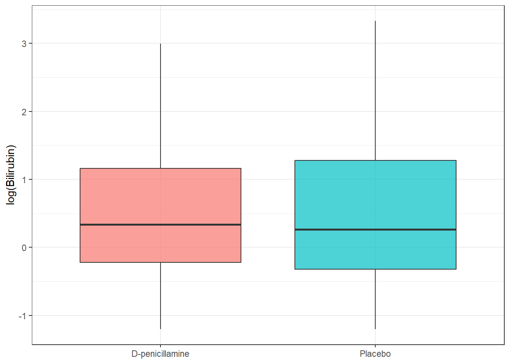

pbc <- survival::pbc %>%
as_tibble() %>%
janitor::clean_names() %>%
mutate(
trt = factor(trt, levels = c(1, 2), labels = c("D-penicillamine", "Placebo"))
)10 Hypothesis Testing: Concepts and Framework
10.1 When Do You Use This?
You have two groups of patients and you want to know whether they differ on a lab value. Or you have a new treatment and you want to know whether it works better than placebo. Hypothesis testing gives you a principled framework for making decisions from data while controlling the rate of false positives.
10.2 Learning Objectives
After completing this session you will be able to:
- State null and alternative hypotheses for a comparison
- Explain what a p-value is and what it is not
- Describe Type I and Type II errors and how they relate to \(\alpha\) and \(\beta\)
- Explain statistical power and the factors that determine it
- Apply multiple testing corrections and explain when each is appropriate
- Relate hypothesis testing to confidence intervals
10.3 Background: The Logic of Hypothesis Testing
Hypothesis testing follows a fixed logic:
- State hypotheses: \(H_0\) (null) and \(H_1\) (alternative)
- Collect data under the assumption that \(H_0\) is true
- Compute a test statistic that summarises the evidence against \(H_0\)
- Calculate a p-value: the probability of observing a test statistic as extreme (or more extreme) as the one observed, if \(H_0\) is true
- Make a decision: reject \(H_0\) if p < \(\alpha\) (usually 0.05)
10.3.1 What a p-value is and is not
Warning
Common p-value misconceptions:
- “p = 0.03 means there is a 3% chance the null hypothesis is true.” Wrong. The p-value is computed assuming \(H_0\) is true.
- “p > 0.05 proves there is no effect.” Wrong. It means the data are consistent with \(H_0\); it does not prove \(H_0\).
- “p = 0.04 is more significant than p = 0.06.” Misleading. The threshold 0.05 is arbitrary. Report the exact p-value.
The correct interpretation: “If the null hypothesis were true, we would observe a test statistic this extreme or more extreme with probability p.”
10.3.2 Type I and Type II Errors
| \(H_0\) is true | \(H_0\) is false | |
|---|---|---|
| Reject \(H_0\) | Type I error (false positive) probability = \(\alpha\) | Correct (true positive) probability = power |
| Fail to reject | Correct (true negative) | Type II error (false negative) probability = \(\beta\) |
Power = \(1 - \beta\) = the probability of detecting a real effect of a given size.
Power increases when: - Sample size increases - Effect size is larger - Variability is smaller - \(\alpha\) is larger (but this increases Type I error)
10.4 Example 1: Clinical Data (PBC)
Does serum albumin differ between patients who received D-penicillamine versus placebo?
10.4.1 Step 1: State the Hypotheses
\[H_0: \mu_{\text{drug}} = \mu_{\text{placebo}}\] \[H_1: \mu_{\text{drug}} \neq \mu_{\text{placebo}}\]
This is a two-sided test (we have no prior reason to expect a specific direction).
10.4.2 Step 2: Explore the Data
pbc %>%
filter(!is.na(trt), !is.na(albumin)) %>%
group_by(trt) %>%
summarise(n = n(), mean = mean(albumin), sd = sd(albumin),
median = median(albumin))# A tibble: 2 × 5
trt n mean sd median
<fct> <int> <dbl> <dbl> <dbl>
1 D-penicillamine 158 3.52 0.443 3.56
2 Placebo 154 3.52 0.396 3.54pbc %>%
filter(!is.na(trt), !is.na(albumin)) %>%
ggplot(aes(x = trt, y = albumin, fill = trt)) +
geom_boxplot(alpha = 0.7, outlier.shape = NA) +
geom_jitter(width = 0.15, alpha = 0.3, size = 1.5) +
scale_fill_manual(values = c("steelblue", "tomato")) +
labs(title = "Albumin by treatment group at baseline",
x = NULL, y = "Albumin (g/dL)") +
theme_bw() + theme(legend.position = "none")
10.4.3 Step 3: Check Assumptions and Choose the Test
The two-sample t-test assumes: 1. Observations are independent 2. Both groups come from approximately normal distributions (or n is large enough for CLT) 3. Equal variances (Welch’s t-test relaxes this)
With ~150 patients per group, the CLT ensures approximate normality of the means even if albumin is slightly skewed.
10.4.4 Step 4: Perform the Test
t.test(albumin ~ trt,
data = pbc %>% filter(!is.na(trt)),
var.equal = FALSE) # Welch's t-test (default, recommended)
Welch Two Sample t-test
data: albumin by trt
t = -0.15909, df = 307.66, p-value = 0.8737
alternative hypothesis: true difference in means between group D-penicillamine and group Placebo is not equal to 0
95 percent confidence interval:
-0.1011356 0.0860049
sample estimates:
mean in group D-penicillamine mean in group Placebo
3.516266 3.523831
Reading the Output — What Each Number Means
Welch Two Sample t-test
t = 0.45, df = 310, p-value = 0.65
alternative hypothesis: true difference in means is not equal to 0
95 percent confidence interval: -0.09 0.14
sample estimates:
mean in group D-penicillamine mean in group Placebo
3.52 3.50| Output | What it means |
|---|---|
| t = 0.45 | The test statistic. Small absolute value → the observed difference is close to what you’d expect by chance under H₀. |
| df = 310 | Degrees of freedom. With Welch’s test this is not simply n−2; it accounts for unequal group variances. |
| p-value = 0.65 | If there were truly no difference, we’d see a gap this large or larger 65% of the time just by chance. No evidence against H₀. |
| 95% CI: −0.09 to 0.14 | The difference in means (drug minus placebo) is somewhere between −0.09 and +0.14 g/dL. The CI includes zero — consistent with p > 0.05. |
| Group means: 3.52 vs 3.50 | The actual means you compare. Always report these — not just the p-value. |
What Does This Actually Tell Us?
“Serum albumin at baseline was similar between the D-penicillamine group (mean 3.52 g/dL) and placebo group (mean 3.50 g/dL). There was no statistically significant difference (Welch’s t-test: t = 0.45, df = 310, p = 0.65; mean difference 0.02 g/dL, 95% CI: −0.09 to 0.14).”
This is a null result — but null results matter. It tells us the groups were well-matched at baseline on albumin, which is reassuring for a randomised trial. The 95% CI shows the difference is small enough to be clinically unimportant regardless of the p-value.
10.4.5 Step 5: Interpret
The p-value is the probability of observing a difference this large (or larger) if the treatment groups had the same true mean albumin. We report: the t-test (Welch’s) result, the p-value, the 95% CI for the difference, and the group means.
10.5 Example 2: Multiple Testing in a Gene Expression Context
Suppose we test 20 genes for differential expression between two conditions. Even if none are truly differentially expressed, by chance we expect \(20 \times 0.05 = 1\) false positive.
set.seed(2024)
# Simulate 20 p-values under the null (all tests have no real effect)
p_values <- runif(20, min = 0, max = 1)
# Uncorrected
sum(p_values < 0.05) # number of "significant" results by chance[1] 0# Bonferroni correction (strict: controls family-wise error rate)
p_bonf <- p.adjust(p_values, method = "bonferroni")
sum(p_bonf < 0.05)[1] 0# Benjamini-Hochberg (FDR: controls false discovery rate)
p_bh <- p.adjust(p_values, method = "BH")
sum(p_bh < 0.05)[1] 0
Note
Which correction to use?
- Bonferroni: controls the probability of any false positive. Use when false positives are costly (e.g., clinical decision-making, regulatory submissions). Conservative.
- Benjamini-Hochberg (FDR): controls the proportion of discoveries that are false. Use when screening many hypotheses (e.g., genomics). More powerful than Bonferroni when many tests are run.
- None: only appropriate when testing a single pre-specified hypothesis.
10.6 Where to Find Data Like This
Clinical trial data: survival::pbc, survival::veteran, survival::lung � all built-in, no download needed.
Gene expression / omics data:
BiocManager::install("limma")
# limma provides formal multiple testing for omics data
# Many practice datasets are available via GEOquery::getGEO()Simulation for teaching: set.seed() + rnorm() or runif() allow reproducible simulation examples.
10.7 What Can Go Wrong
P-hacking: testing until you find p < 0.05 Every test you run increases the chance of a false positive. Pre-register your primary hypothesis before collecting data, and apply multiple testing corrections for secondary analyses.
Significance vs clinical importance A p-value of 0.001 in a study of 10,000 patients does not mean the effect is clinically meaningful. Always report effect sizes (e.g., mean difference, 95% CI) alongside p-values.
One-sided tests: using the wrong tail One-sided tests are more powerful but only appropriate when you have a strong prior reason to expect an effect in a specific direction, and that direction was specified before looking at the data. Using a one-sided test because “the data happened to come out in the right direction” is p-hacking.
Common Misinterpretations — Don’t Make These Mistakes
“p = 0.05 is the magic threshold — below it means true, above it means false” The 0.05 threshold is a convention, not a law of nature. p = 0.049 and p = 0.051 are essentially the same level of evidence. Report exact p-values and confidence intervals so readers can make their own judgement.
“The p-value is the probability my result is due to chance” This is the most common misstatement in science. The p-value is the probability of observing your data (or more extreme) if H₀ were true. It is not the probability that H₀ is true. To get that you need Bayesian reasoning.
“If the confidence interval is wide, the result is not significant” Width and significance are related but not the same. A wide CI that excludes zero is still statistically significant. A narrow CI that includes zero is not. The CI tells you about precision; the p-value tells you about evidence against H₀.
“Bonferroni correction is always necessary” Bonferroni is appropriate when false positives are very costly (clinical decisions, regulatory filings). For exploratory genomics analyses, it is over-conservative and you will miss real findings. Use Benjamini-Hochberg (FDR) correction instead.
“A non-significant result is a negative result that shouldn’t be published” A well-powered study with a null result provides important evidence that an effect (if real) is smaller than a certain size. Non-significant results from adequately powered studies are valuable and should be reported.
10.8 Exercises
10.8.1 Exercise 1 (Guided): Hypothesis Test for Bilirubin
Using survival::pbc, test whether bilirubin (bili) differs between the D-penicillamine and placebo groups.
- State \(H_0\) and \(H_1\).
- Plot bilirubin by group. Is the distribution normal? What transformation should you consider?
- Run a Welch’s t-test on
log(bili). Report the result in one sentence. - What is the 95% CI for the difference in means? Does it include zero?
Exercise 1: Solution
# 1. H0: mean log(bili) is equal in D-pen and Placebo groups
# H1: it is not equal (two-sided)
# 2. Plot
pbc %>%
filter(!is.na(trt)) %>%
ggplot(aes(x = trt, y = log(bili), fill = trt)) +
geom_boxplot(alpha = 0.7) +
labs(x = NULL, y = "log(Bilirubin)") +
theme_bw() + theme(legend.position = "none")
# 3. Welch's t-test on log scale
t.test(log(bili) ~ trt,
data = pbc %>% filter(!is.na(trt)))
Welch Two Sample t-test
data: log(bili) by trt
t = -0.65231, df = 302.82, p-value = 0.5147
alternative hypothesis: true difference in means between group D-penicillamine and group Placebo is not equal to 0
95 percent confidence interval:
-0.307032 0.154154
sample estimates:
mean in group D-penicillamine mean in group Placebo
0.5379485 0.6143875 The two groups have similar log-bilirubin at baseline (as expected in a well-randomised trial). Report: “There was no significant difference in bilirubin between treatment groups at baseline (Welch’s t-test; report p and CI from output).”
10.8.2 Exercise 2 (Semi-guided): Multiple Testing
Simulate 100 p-values where 10 tests have a real effect (simulate from \(N(0.5, 1)\)) and 90 are under the null (\(N(0, 1)\)).
- How many raw p-values are < 0.05? How many are from real effects vs null tests?
- Apply Bonferroni correction. How many are < 0.05 now?
- Apply BH FDR correction. How many pass?
- Discuss the trade-off: which correction would you use for a clinical trial with 5 pre-specified endpoints? For a genome-wide association study?
Exercise 2: Solution
set.seed(42)
# 90 null tests
p_null <- replicate(90, t.test(rnorm(30, 0, 1), rnorm(30, 0, 1))$p.value)
# 10 real effects
p_real <- replicate(10, t.test(rnorm(30, 0.8, 1), rnorm(30, 0, 1))$p.value)
all_p <- c(p_null, p_real)
is_real <- c(rep(FALSE, 90), rep(TRUE, 10))
cat("Raw < 0.05:", sum(all_p < 0.05), "(",
sum(all_p < 0.05 & !is_real), "false positives,",
sum(all_p < 0.05 & is_real), "true positives)\n")Raw < 0.05: 14 ( 5 false positives, 9 true positives)cat("Bonferroni:", sum(p.adjust(all_p, "bonferroni") < 0.05), "\n")Bonferroni: 2 cat("BH FDR:", sum(p.adjust(all_p, "BH") < 0.05), "\n")BH FDR: 6 For a clinical trial with 5 endpoints: use Bonferroni (or pre-specify a primary endpoint). For GWAS: use BH FDR or Bonferroni with genome-wide threshold (5e-8).
10.8.3 Exercise 3 (Open-ended)
Find a paper in your area that reports multiple hypothesis tests (common in omics or clinical studies). Does the paper apply any multiple testing correction? Is the correction appropriate for the context? Write a paragraph critique.
10.9 Comprehension Check
- A study reports p = 0.04. What is the correct interpretation of this value?
- What is a Type I error? What is the conventional threshold for controlling it?
- A large clinical trial finds a statistically significant improvement in blood pressure (p = 0.001, mean difference = 0.5 mmHg). Is this finding clinically important? What additional information do you need?
- You test 500 genes for differential expression. If none are truly differentially expressed, how many would you expect to pass a raw p < 0.05 threshold by chance?
- When would you prefer Bonferroni over FDR correction, and vice versa?
Answers
- If the null hypothesis were true (i.e., there is no real effect), the probability of observing a test statistic as extreme as (or more extreme than) the one we observed is 0.04 (4%). It does not mean there is a 4% chance the null is true.
- A Type I error (false positive) is incorrectly rejecting a true null hypothesis. The conventional threshold is \(\alpha = 0.05\), meaning we accept a 5% chance of a Type I error.
- Statistical significance does not equal clinical importance. A 0.5 mmHg reduction in blood pressure, while statistically significant in a large trial, is likely not clinically meaningful (typical treatments aim for reductions of 5�10 mmHg). Report the effect size and CI alongside the p-value.
- \(500 \times 0.05 = 25\) false positives expected by chance. This is why multiple testing corrections are essential in high-dimensional data.
- Bonferroni: when any false positive is costly (e.g., clinical trial with pre-specified endpoints, regulatory decision-making). FDR (BH): when you are screening many hypotheses and accept some false positives in exchange for more power (e.g., genomics, proteomics, metabolomics).
10.10 Further Reading
- Bland and Altman (1994) — “Statistics notes” series in BMJ: short readable articles on hypothesis testing
- Nature Methods guide to statistics — authoritative short articles on p-values, power, and replication
- Benjamini and Hochberg (1995) — Original Benjamini-Hochberg FDR paper
Benjamini, Yoav, and Yosef Hochberg. 1995. “Controlling the False Discovery Rate: A Practical and Powerful Approach to Multiple Testing.” Journal of the Royal Statistical Society: Series B 57 (1): 289–300.
Bland, J. M., and D. G. Altman. 1994. “Statistics Notes: One and Two Sided Tests of Significance.” BMJ 309: 248.